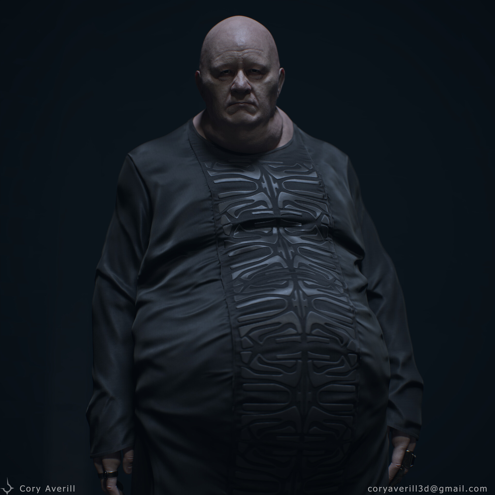
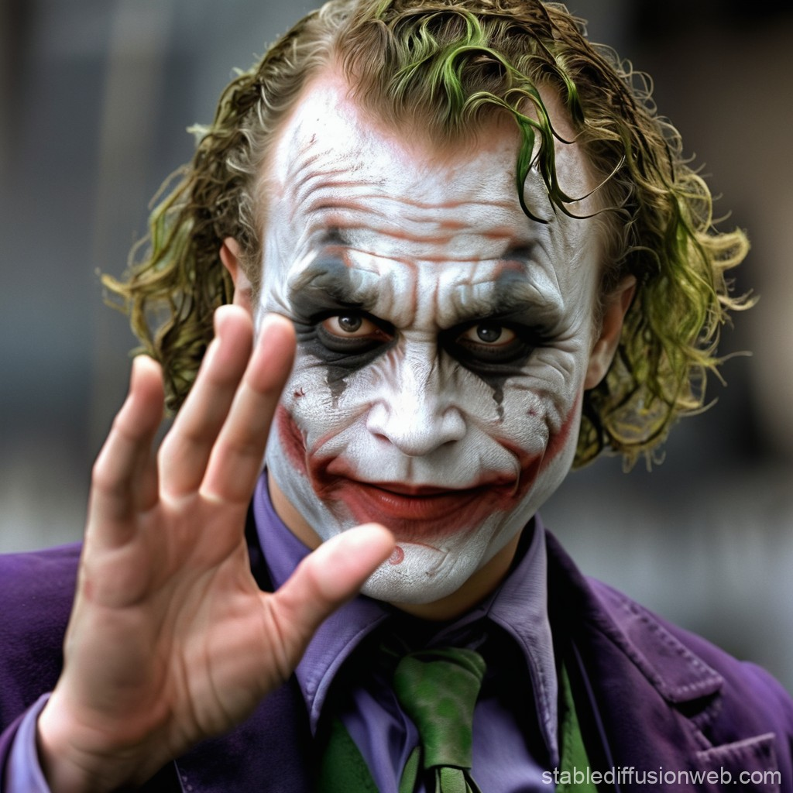
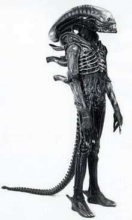

Team Members

Darth Vader
Co-Founder & CEO
Darth Vader is the head of operations here. He has had a variety of experiences
in the past that makes him the perfect leader for these team. He is very charismatic
and can influence people with his words. One of his more major experiences before coming to this team
was running and leading a galatic empire. Overall, Vader is a major part of this team, and we wouldn't
be the same without him.

Baron Harkonnen
Head of Operations
Baron Harkonnen is a man with a plan. He takes what Vader invisions and makes it a reality
through his variety of technical skills. In his past, he was the baron (leader) of House Harkonnen,
and lead the house to great riches. Through this experience, he is able to create masterful plans that helps
this team succeed.

Joker
Head of Marketing
Joker is the perfect man to be running the marketing campaign here. Like everybody else on this team, he has had
a variety of experiences in his respected field. In the marketing world, he is known as a legend. This is because
of the stunts he pulled in Gotham, where he shocked the world with his marketing, making many appearances on
Gotham News.

Xenomorph
Founder
We don't know too much about Xenomorph, as he doesn't talk or speak English, but we do know that he created
this team. Why he created it, we don't know. We also don't know why he chose the rest of the team members. We
can only hope that he has a plan for this team and knows what he is doing.